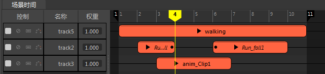
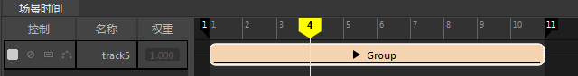
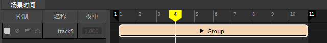
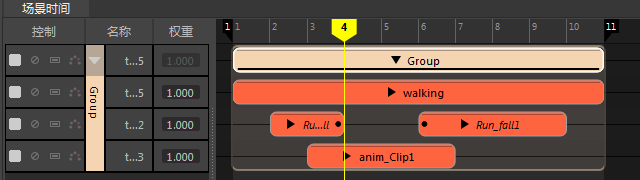

组片段允许将多个片段打包到一起，以便更好地组织。例如，您可以打包由踢、打和转组成的空手道动作，然后在另一个角色上重用该分组运动。可以将包含多个 Take 的 FBX 文件导入到一个组片段中。请参见将多个 Take 导入时间编辑器。
创建组片段后，可以对其进行移动、缩放、循环并创建过渡。应用于组内单个片段的位置以及任何过渡、片段效果等均保持不变。请参见编辑组内的片段。
注： 由于无法分割应用了“循环”(Loop)或“保持”(Hold)的动画片段，因此通过创建并分割组片段可以避开这一限制。
若要创建组片段，请执行以下操作：
- 拖动或按住 Shift 键并选择多个相同类型的片段。

- 在其上单击鼠标右键，然后选择“创建组”(Create Group)
 。

。

展开组片段，可查看其中包含的所有片段。

从组片段中移除片段
若要展开组片段，请在其上单击鼠标右键，从时间编辑器片段(Clip)上下文菜单中选择“解组”(Ungroup)要移除的片段，然后将其拖动到另一个轨迹上。